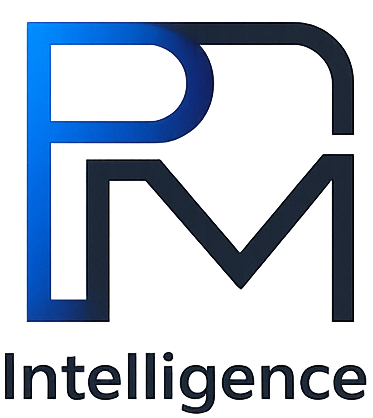

Programme & project management
Structure complex initiatives around clear scope, accountable ownership and realistic plans. Portfolio oversight, PMO support, progress reporting and project recovery keep delivery focused.

PROJECTS · PEOPLE · PERFORMANCE
PMIntel helps businesses, public-sector organisations and European research partnerships turn ambition into well-defined programmes and effective delivery.
FOR ORGANISATIONS MOVING FORWARD
01 / EXPERTISE
Practical support where business priorities, technology and people meet. Engage PMIntel for a focused assignment or ongoing programme and delivery leadership.
Structure complex initiatives around clear scope, accountable ownership and realistic plans. Portfolio oversight, PMO support, progress reporting and project recovery keep delivery focused.
Guide technology transitions, infrastructure changes and service improvements. Coordinate suppliers, dependencies and business stakeholders from planning through handover.
Support consortium coordination, work planning, reporting, risk and quality management. Connect research outputs with exploitation pathways and practical business applications.
Turn opportunities into clear value propositions, business cases and service offerings. Shape partnerships and priorities with a practical view of feasibility, resources and growth.
Bring business and technical teams to a shared understanding. Stakeholder workshops, process analysis and prioritised requirements create a sound basis for decisions and solution delivery.
Lead project managers, technical specialists and cross-functional teams. Clarify responsibilities, balance capacity, resolve delivery obstacles and build constructive stakeholder relationships.
Make risks visible and decisions timely. Establish proportionate controls, quality reviews, escalation routes and management reporting that support delivery without unnecessary bureaucracy.
Strengthen project management practice through coaching, focused training and practical process improvement. Help managers and teams build consistent, repeatable ways of working.
02 / HOW WE WORK
A hands-on approach that connects strategic intent with the decisions, responsibilities and routines needed to deliver.
Clarify the need, the context and what success looks like.
Agree priorities, requirements, ownership and a workable plan.
Coordinate teams, manage risks and keep decisions moving.
Review outcomes, transfer knowledge and strengthen capability.
03 / EXPERIENCE THAT MATTERS
PMIntel is led by Gerasimos Kouloumbis, a programme and delivery leader with more than 25 years of experience across global IT programmes and European research initiatives.
Drawing on senior roles at Hewlett-Packard and INLECOM, PMIntel combines business understanding, technical fluency and the day-to-day discipline of leading project managers, technical leads and research teams.
A foundation in business and technology: MBA, MSc in Information Systems Engineering and a Master’s Certificate in Project Management.
LET’S START A CONVERSATION
Discuss a project, a delivery challenge or an opportunity for collaboration.
PMIntel SINGLE MEMBER P.C.
Project management
Registered seat: Municipality of Rafina-Pikermi
Peisistratou 21, Ntrafi-Pikermi, Post Code: 19009VAT: 802231985
Tax office: Pallini
G.E.MI. registration number: 172622209000
Manager and sole member: Gerasimos Kouloumbis
Member’s address: Peisistratou 21, Ntrafi-Pikermi, Post Code: 19009 (same as the company address)
Company capital: €10,000.00
Total company units: 1,000, with a nominal value of €10.00 each
Capital contribution units: 1,000
Non-capital contribution units: 0
Guarantee contribution units: 0
Total guarantee contributions: €0.00